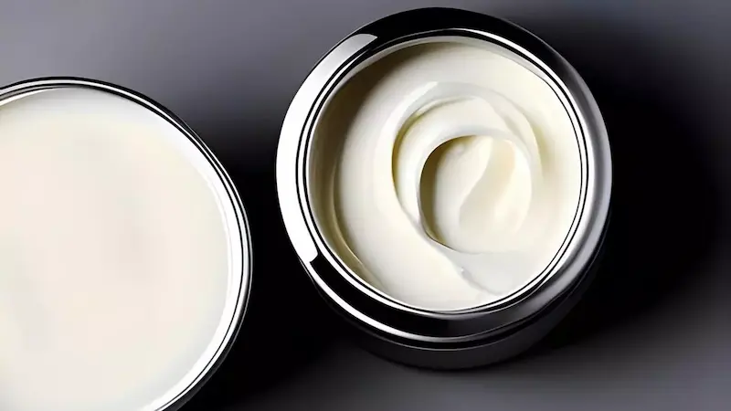
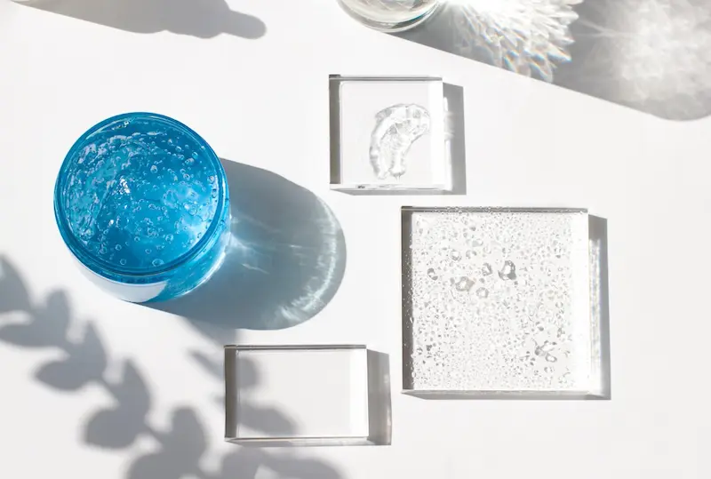

Свежесть и баланс: сила природных минералов для здоровья вашей кожиЧто такое термальная вода?
Термальная вода — это бактериологически чистая вода, добываемая из глубоких слоев земли. Проходя сквозь горные породы, она насыщается уникальной концентрацией минеральных солей и микроэлементов, жизненно важных для кожи.
В отличие от обычной воды, термальная обладает доказанными терапевтическими свойствами: успокаивает раздражения, восстанавливает естественный баланс защитного барьера и защищает клетки от оксидативного стресса.
Основные минералы и их роль
| Минерал | Основная роль |
|---|---|
| Селен | Мощный антиоксидант и природный успокаивающий агент |
| Цинк | Противовоспаличное и очищающее действие |
| Магний | Стимулирует регенерацию и клеточную энергию |
| Кремний | Защищает и смягчает чувствительную кожу |

Как она воздействует на кожу?
Этот ингредиент действует мгновенно, снижая реактивность кожи. Минералы проникают в верхние слои эпидермиса, обеспечивая моментальное чувство свежести и устраняя дискомфорт, вызванный жжением или зудом.
Благодаря сбалансированному составу, термальная вода укрепляет защитный барьер кожи, делая её более устойчивой к внешним агрессорам, таким как загрязнение воздуха, ветер или УФ-излучение.
Когда выбирать термальную воду?
Минеральный состав: Печать чистоты
В отличие от водопроводной воды, термальная бьет из глубоких источников, где естественным образом обогащается селеном, магнием и кальцием.
Уникальный состав придает ей пребиотические свойства, помогая восстановить микробиом кожи. Это именно то «питание», которое необходимо вашему защитному барьеру, чтобы оставаться целостным и сопротивляться внешним факторам.
Антиоксидантный эффект и мгновенное успокоение
Благодаря высокому содержанию селена, термальная вода действует как щит против оксидативного стресса. Она нейтрализует свободные радикалы до того, как они вызовут преждевременное старение клеток.
Её противовоспалительный эффект доказан клинически: она мгновенно снижает температуру поверхности кожи и успокаивает зуд, являясь незаменимым союзником для людей с атопическим дерматитом или розацеа.
Фиксатор макияжа и «бустер» увлажнения
Термальная вода — это не просто освежающий спрей. Нанесенная между этапами ухода, она облегчает впитывание гиалуроновой кислоты и увлажняющих кремов, «запечатывая» влагу внутри дермы.
Распыление поверх макияжа устраняет «эффект пудры» и придает лицу естественный финиш с эффектом сияния (dewy look), продлевая стойкость косметики в течение всего дня.
Эволюция кожи под воздействием термальной воды
Покраснение и температурный дискомфорт исчезают за секунды
Кожа становится более эластичной и заметно увлажненной
Защитный барьер становится устойчивее к загрязнениям
Лицо обретает естественное сияние и отдохнувший вид
Часто задаваемые вопросы о Центелле (CICA)
Помогает ли центелла при постакне?
Да, центелла и её изолят, мадекассосид, ускоряют регенерацию тканей и осветляют застойные пятна постакне, предотвращая формирование глубоких рубцов и шрамов.
Можно ли использовать средства с центеллой после пилинга?
Это один из лучших ингредиентов для восстановления после кислот. Она быстро снимает ощущение «жара», устраняет покраснение и помогает коже быстрее восстановить защитный барьер.
Вызывает ли центелла аллергию?
Центелла считается гипоаллергенным ингредиентом и подходит даже для самой чувствительной кожи. Она обладает выраженным успокаивающим эффектом и крайне редко вызывает побочные реакции.
В чем разница между Центеллой и Мадекассосидом?
Центелла — это цельный экстракт растения, в то время как мадекассосид — это её чистый, концентрированный изолят. Мадекассосид действует глубже и эффективнее в вопросах синтеза коллагена и заживления.
Поделитесь своим опытом
Ваш отзыв поможет другим понять, подойдёт ли этот ингредиент именно им. Даже 1–2 предложения будут полезны
Не знаете, что написать? Выберите варианты — текст сформируется автоматически
Мы публикуем только реальные отзывы. Реклама и ссылки не проходят модерацию.
Отправляя комментарий, вы соглашаетесь с Политикой конфиденциальности.